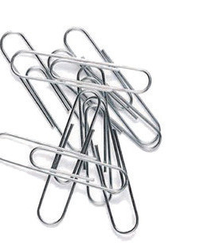
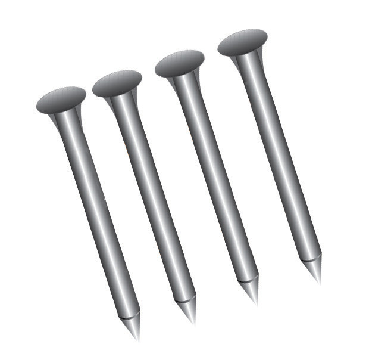
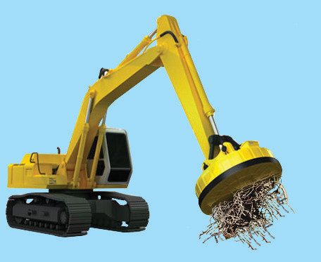
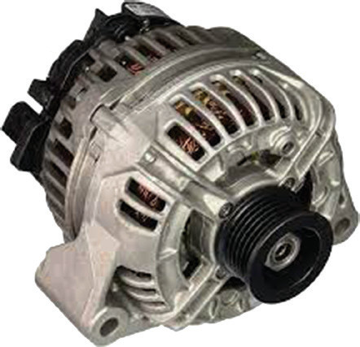

of electromagnets and transformers. Brass, copper, tin, zinc and aluminium are non-magnetic materials. These materials are not attracted by a magnet. Non-metals, for example, plastic, rubber, water, wood and ceramics are also non-magnetic. These materials cannot be magnetised.
Types of magnets
Magnets are categorised according to their sources of magnetism. They include:
1. Temporary magnets. These acquire magnetism due to an applied external magnetic field but lose their magnetism when the external field is removed. These magnets retain magnetism in a short time (i.e., the time during which the magnetising field is present). For example, the magnetism that is induced in iron is temporary and is lost once the external magnet is withdrawn. Iron nails and paper clips shown in Figure 3.3 (a) are good examples of objects that can be temporarily magnetised. An electromagnet used in magnetic cranes, as shown in Figure 3.3 (b), is an example of a temporary magnet.



Other examples of temporary magnetism are electromagnets. These are temporary magnets created by an electric current flowing through a coil, often with an iron core to enhance the magnetic field. They can be quickly turned on and off, and their magnetic strength can be adjusted by changing the current. However, they require a continuous power supply to maintain magnetism, which disappears when the current stops. Electromagnets are widely used in applications needing strong, controllable magnetic fields, such as railroad tracks, electric motors, microphones, hard drives, MRI machines, security systems, cranes, and various computer and television hardware.
